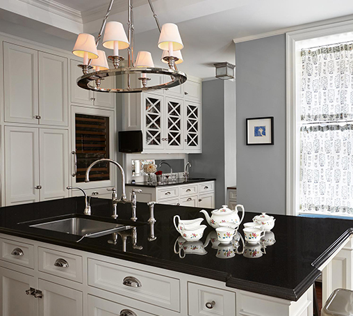

About FJB Contracting
Our founder, Francis J. Brady, moved to NYC from County Longford, Ireland, in 1985 and ran the New York City Marathon that same year. Not one to shy away from a challenge, he started FJB Contracting, Inc. in 1988.
Frank has high expectations and demands high-quality work and excellent customer service for FJB’s high-end residential and commercial clients. That’s why customers still call him back 10, 20, 30 years later. They consider him their GC for life.
He still loves swinging a hammer. And when he visits a job site, it only takes a quick scan of the room for him to notice the cabinet door that’s a hair off, or the tile line that drifts a sixteenth of an inch across a wall, and he gets it corrected before the client ever sees it.
Our crew is made up of carpenters, tilers, laborers and painters, many of whom have been at it for decades.

Planning a renovation?
Our office is open Monday to Friday, 7:00 am to 5:00 pm.